Code
suppressPackageStartupMessages("rstanarm")
## [1] "rstanarm"
#| message: false
#| results: "hide"
#| warnings: false
library(rstanarm)
library(tidyverse)
library(easystats)Benötigte R-Pakete für dieses Thema:
suppressPackageStartupMessages("rstanarm")
## [1] "rstanarm"
#| message: false
#| results: "hide"
#| warnings: false
library(rstanarm)
library(tidyverse)
library(easystats)Contra:
Pro:
Meinungen kennen kein richtig und kein falsch: Meinungen sind keine Fakten. Konflikte können auf Basis von Meinungen nur schwer gelöst werden.
Wissenschaft produziert Fakten. Da Fakten universell sind (sein können), ist Wissenschaft potenziell ein Weg zur Konfliktlösung. Warum helfen Fakten bei Konflikten?
Fakten sind neutral gegenüber Personen. Fakten bieten daher eine Chance zur fairen Einigung.
Wann ist ein Fakt ein Fakt?
Fakten müssen vor allem nachprüfbar sein (Daten, Analyse und Bericht müssen offen zugänglich sein).
The effectiveness of full messenger RNA (mRNA) vaccination (≥14 days after the second dose) was 89% (95% confidence interval [CI], 87 to 91) against laboratory-confirmed SARS-CoV-2 infection leading to hospitalization, 90% (95% CI, 86 to 93) against infection leading to an ICU admission, and 91% (95% CI, 89 to 93) against infection leading to an emergency department or urgent care clinic visit.
Thompson u. a. (2021); vgl. auch Nasreen u. a. (2021); Pormohammad u. a. (2021)
Drei Anforderungen an die Qualität von Studien:

Dai u. a. (2021)
Nasreen u. a. (2021) definieren effectivity, \(e\), so:
\[e = 1 - C; C= \frac{n_{vacc|pos}}{n_{vacc|neg}}\]
Beispiel: Von den 100 Personen mit positiver Corona-Diagnose sind 10 geimpft, \(n_{vacc|pos}=10\). Von den 100 Personen mit negativer Corona-Diagnose sind 90 geimpft, \(n_{vacc|neg}=90\)
\[C= \frac{10}{90} = \frac{1}{9}; e = 1 - \frac{1}{9} = \frac{8}{9} \approx 0.88\]
In diesem Beispiel liegt die Effektvitität \(e\) bei knapp 90%.
Hintergrund:
Eine Psychologin, die im öffentlichen Dienst arbeitet, versucht herauszufinden, warum einige Kinder intelligenter sind als andere. Dazu wurden in einer aufwändigen Studie die Intelligenz vieler Kinder gemessen. Zusätzliche wurden verschiedene Korrelate der Intelligenz erhoben, in der Hoffnung, “Risikofaktoren” für geringere Intelligenz zu entdecken.
Forschungsfrage:
Unterscheidet sich der mittlere IQ-Wert (
kid_score) von Kindern in Abhängigkeit davon, ob ihre jeweilige Mutter über einen Schlusabschluss (mom_hs) verfügt? (ceteris paribus)
data("kidiq") # Paket rstanarm
m10.1 <- stan_glm(
kid_score ~ mom_hs,
data = kidiq)Alternativ können Sie die Daten hier herunterladen.
Mit parameters(m10.1) bekommt man die Parameter des Modells:
| Parameter | Median | 95% CI | pd | % in ROPE | Rhat | ESS | Prior |
|---|---|---|---|---|---|---|---|
| (Intercept) | 77.55 | (73.67, 81.49) | 100% | 0% | 0.999 | 3817.00 | Normal (86.80 +- 51.03) |
| mom_hs | 11.75 | (7.42, 16.25) | 100% | 0% | 1.000 | 3821.00 | Normal (0.00 +- 124.21) |
ggplot(kidiq) +
aes(x = mom_hs, y = kid_score) +
geom_jitter(width = 0.1, alpha = .5) +
geom_abline(slope = coef(m10.1)[2],
intercept = coef(m10.1)[1]) +
scale_x_continuous(breaks = c(0, 1))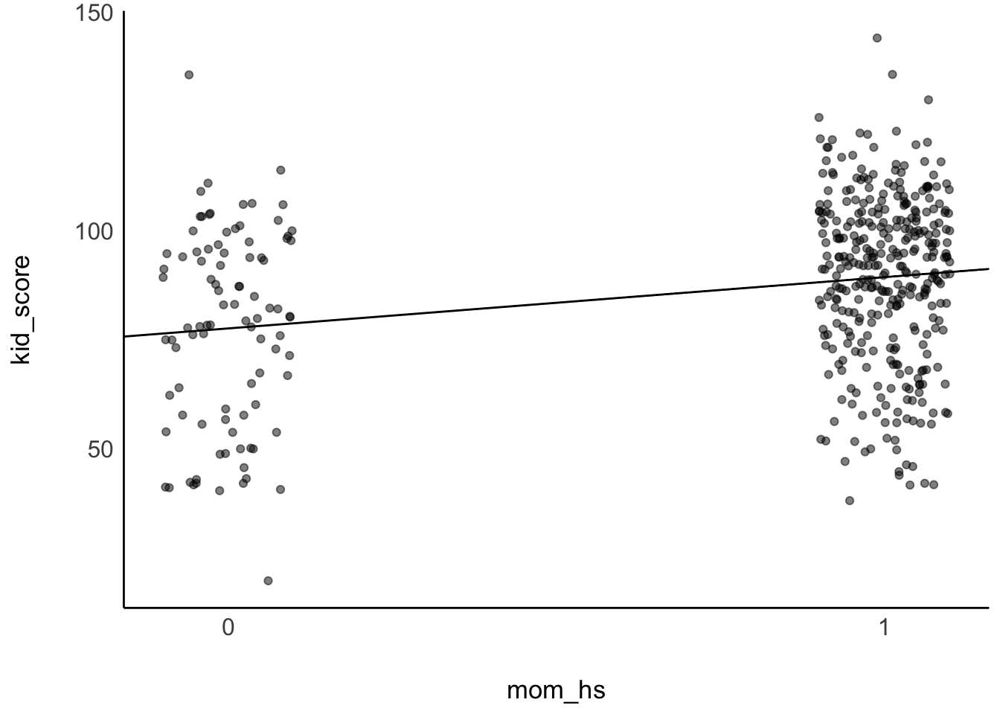
m10.1m10.1: kid_score = 78 + 12*mom_hs + error
mom_hs = 0) verfügen:kid_score = 78 + 0*12 + error
kid_score = 78 + 1*12 + error = 90 + error
m10.1 als Mittelwertsdifferenzkidiq %>%
group_by(mom_hs) %>%
summarise(kid_score_avg =
mean(kid_score))| mom_hs | kid_score_avg |
|---|---|
| 0 | 77.54839 |
| 1 | 89.31965 |
Der mittlere (average, avg) IQ-Wert unterscheidet sich um ca. 12 Punkte (89.4-77.6), zugunsten der Kinder von Müttern mit Abschluss. Allerdings gibt es viel Streuung um die Mittelwerte herum.
m10.1m10.1_post <-
m10.1 %>%
as_tibble() | Stichprobe aus der Post-Verteilung | ||
| (Intercept) | mom_hs | sigma |
|---|---|---|
| 81.4 | 8.4 | 20.0 |
| 78.8 | 9.4 | 20.6 |
| 76.1 | 12.9 | 18.5 |
| 77.0 | 12.0 | 19.3 |
| 74.8 | 13.5 | 19.6 |
pi_mom_hs <-
m10.1_post %>%
summarise(pi_95 = quantile(mom_hs, c(.025, .975)))
pi_mom_hs| pi_95 |
|---|
| 7.416031 |
| 16.254533 |
Mit 95% Wahrscheinlichkeit liegt der Unterschied im mittleren IQ-Wert zwischen Kindern von Müttern mit bzw. ohne Schulabschluss im Bereich von 7 bis 14 IQ-Punkten, laut unserem Modell: \(95\%PI: [7,16]\).
Die Hypothese, dass es keinen Unterschied oder einen Unterschied in die andere Richtung geben sollte, ist vor diesem Hintergrund als unwahrscheinlich abzulehnen.
Visualisieren wir abschließend die Posteriori-Verteilung.
plot(hdi(m10.1))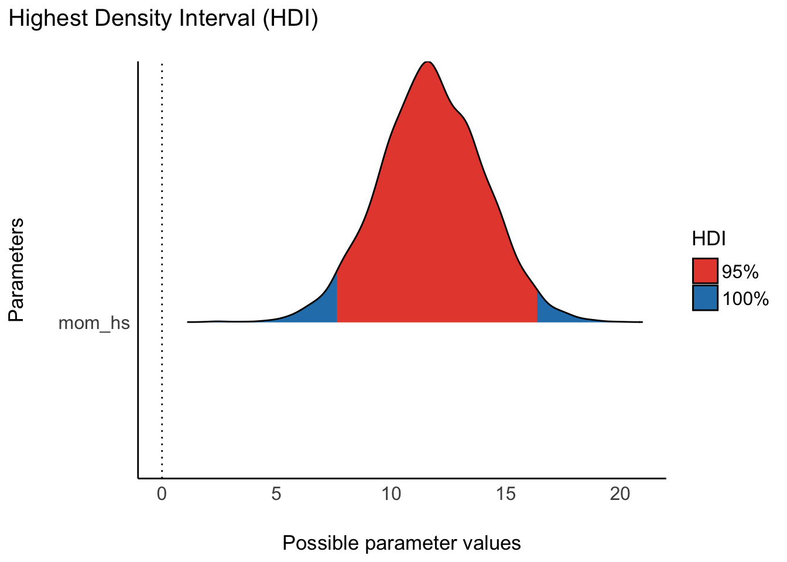

Quelle: Imgflip Meme Generator
We do not generally use null hypothesis significance testing in our own work. In the fields in which we work, we do not generally think null hyptheses can be true: in social science and public health, just about every treatment one might consider will have some effect, and no comparison or regression coefficient of interest will be exactly zero. We do not find it particularly helpful to formulate and test null hypothess that we knowe ahead of time cannot be true.
Gelman, Hill, und Vehtari (2021)
Nullhypothesen, \(H_0\), sind z.B.: \(\rho=0\), \(\rho_1 = rho_2\), \(\mu_1 = \mu_2\), \(\mu=0\), \(\beta_1=0\).
Nullhypothesen zu testen, ist sehr verbreitet.
Ein Grund ist, dass in der Frequentistischen Statistik keine andere Art von Hypothesentest möglich ist1
Ein anderer Grund ist vermutlich, … wir haben es schon immer so gemacht.
Alternativen zum Testen von Nullhypothesen:
Wie stark ist der Zusammenhang von jeweils Schulabschluss der Mutter (
mom_hs) und IQ der Mutter (mom_iq) auf den IQ des Kindes (kid_score) ?
Deskriptive Statistiken zum Datensatz:
data("kidiq") # Paket rstanarm, alternativ über CSV einlesen
describe_distribution(kidiq)| Variable | Mean | SD | IQR | Range | Skewness | Kurtosis | n | n_Missing |
|---|---|---|---|---|---|---|---|---|
| kid_score | 86.80 | 20.41 | 28.00 | (20.00, 144.00) | -0.46 | -0.16 | 434 | 0 |
| mom_hs | 0.79 | 0.41 | 0.00 | (0.00, 1.00) | -1.40 | -0.05 | 434 | 0 |
| mom_iq | 100.00 | 15.00 | 21.67 | (71.04, 138.89) | 0.47 | -0.57 | 434 | 0 |
| mom_age | 22.79 | 2.70 | 4.00 | (17.00, 29.00) | 0.18 | -0.63 | 434 | 0 |
Berechnen wir folgendens Modell: kid_score ~ mom_iq.
m10.2 <-
stan_glm(kid_score ~ mom_iq, data = kidiq)
m10.2 %>%
parameters()| Parameter | Median | 95% CI | pd | % in ROPE | Rhat | ESS | Prior |
|---|---|---|---|---|---|---|---|
| (Intercept) | 25.72 | (13.96, 37.35) | 100% | 0% | 1.000 | 3224.00 | Normal (86.80 +- 51.03) |
| mom_iq | 0.61 | (0.49, 0.72) | 100% | 100% | 1.000 | 3397.00 | Normal (0.00 +- 3.40) |
kid_score = 26 + 0.6 * mom_iq + error
Visualisieren wir uns noch das Modell:
kidiq %>%
ggplot(aes(x = mom_iq, y = kid_score)) +
geom_point(alpha = .7) +
geom_abline(slope = coef(m10.2)[2],
intercept = coef(m10.2)[1],
color = "blue")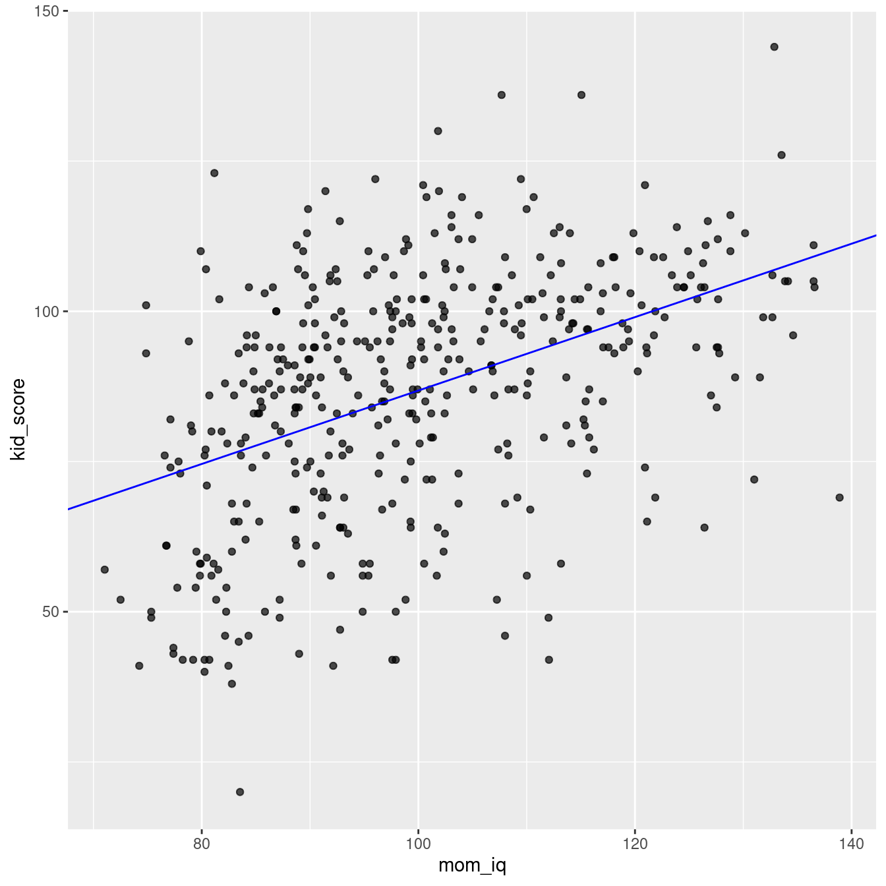
Die Linie zeigt die vorhergesagten IQ-Werte der Kinder für verschiedene IQ-Werte der Mütter. Vergleicht man Teilpopulationen von Müttern mit mittleren Unterschied von einem IQ-Punkt, so findet man 0.6 IQ-Punkte Unterschied bei ihren Kindern im Durchschnitt. Der Achsenabschnitt hilft uns nicht weiter, da es keine Menschen mit einem IQ von 0 gibt.
m10.3Berechnen wir als nächstes ein Modell mit beiden Prädiktoren: kid_score ~ mom_hs + mom_iq.
m10.3 <-
stan_glm(
kid_score ~ mom_hs + mom_iq,
refresh = 0,
data = kidiq)Will man nur schnell die Punktschätzer (Median) zu den Modellparametern (auch als Koeffizienten bezeichnet), so kann man anstelle von parameters() auch schreiben:
coef(m10.3)
## (Intercept) mom_hs mom_iq
## 25.8252639 5.9095409 0.5621045m10.3: kid_score = 26 + mom_hs + 0.6*mom_iq + error
Möchte man nur z.B. den 3. Wert aus diesem Vektor, so kann man schreiben:
coef(m10.3)[3]
## mom_iq
## 0.5621045Und die Visualisierung des Modells:
kidiq %>%
mutate(mom_hs = factor(mom_hs)) %>%
ggplot(aes(x = mom_iq, y = kid_score, color = mom_hs)) +
geom_point(alpha = .7) +
geom_abline(slope = coef(m10.3)[3], # den 3. Wert aus dem Vector, den `coef()` zurückgibt
intercept = 26,
linewidth = 1,
color = "blue") +
geom_abline(slope = coef(m10.3)[3],
intercept = 32,
color = "red",
linewidth = 2) +
scale_color_manual(values = c("blue", "red")) +
theme(legend.position = "bottom")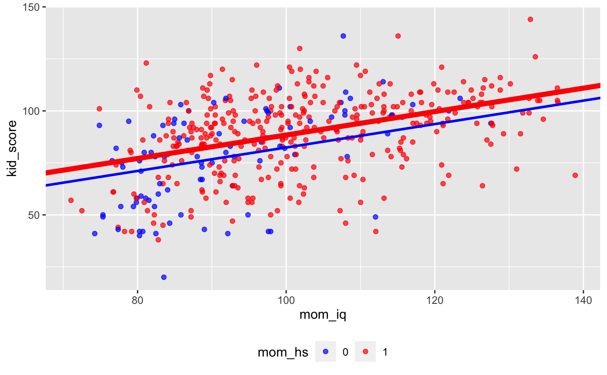
In m10.3 hat das Modell die Regressionsgeraden gezwungen, parallel zu sein. Betrachtet man das Streudiagramm, so sieht man, das nicht-parallele Geraden besser passen. Sind die Regressionsgeraden nicht parallel, so spricht man von einer Interaktion (synonym: Interaktionseffekt, Moderation).
Liegt eine Interaktion vor, so unterscheidet sich die Steigung der Geraden in den Gruppen.
Wir berechnen mit m10.4 folgendes Modell: kid_score ~ mom_hs + mom_iq + mom_hs:mom_iq.
m10.4 <-
stan_glm(kid_score ~ mom_hs + mom_iq + mom_hs:mom_iq,
data = kidiq, refresh = 0)
coef(m10.4)
## (Intercept) mom_hs mom_iq mom_hs:mom_iq
## -9.7923926 49.6047511 0.9516899 -0.4675559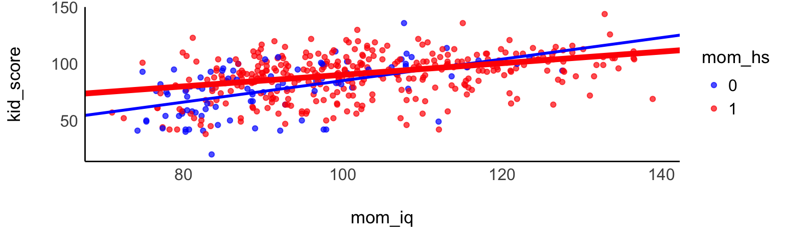
m10.4mom_hs: Unterschied der IQ-Schätzwerte zwischen Kindern mit Mutter ohne bzw. mit Schulabschluss und jeweils mit einem IQ von 0. Puh.mom_iq: Unterschied der IQ-Schätzwerte zwischen Kindern mit Müttern, die sich um einen IQ-Punkt unterscheiden aber jeweils ohne Schulabschluss.mom_iq zwischen Mütter mit bzw. ohne Schulabschluss.mom_hs=0:
kid_score = -11 + 51*0 + 1.1* mom_iq + 0.5*0*mom_iq
= -11 + 1.1*mom_iq
mom_hs=1:
kid_score = -11 + 51*1 + 1.1* mom_iq + 0.5*1*mom_iq
= 40 + 0.6*mom_iqGelman, Hill, und Vehtari (2021), Kap. 10.3
kidiq <-
kidiq %>%
mutate(mom_iq_c = mom_iq - mean(mom_iq),
mom_hs_c = mom_hs - mean(mom_hs))m10.5 <- stan_glm(kid_score ~ mom_hs + mom_iq_c + mom_hs:mom_iq_c,
data = kidiq,
refresh = 0)
coef(m10.5)
## (Intercept) mom_hs mom_iq_c mom_hs:mom_iq_c
## 85.3409544 2.9095259 0.9644557 -0.4802570m10.5Intercept) gibt den geschätzten IQ des Kindes an, wenn man eine Mutter mittlerer Intelligenz und ohne Schulabschluss betrachtet.mom_hs gibt den Unterschied im geschätzten IQ des Kindes an, wenn man Mütter mittlerer Intelligenz aber mit bzw. ohne Schlusabschluss vergleicht.mom_iq_c gibt den Unterschied im geschätzten IQ des Kindes an, wenn man Mütter ohne Schlusabschluss aber mit einem IQ-Punkt Unterschied vergleicht.mom_hs:mom_iq_c gibt den Unterschied in den Koeffizienten für mom_iq_c an zwischen den beiden Grupen von mom_hs.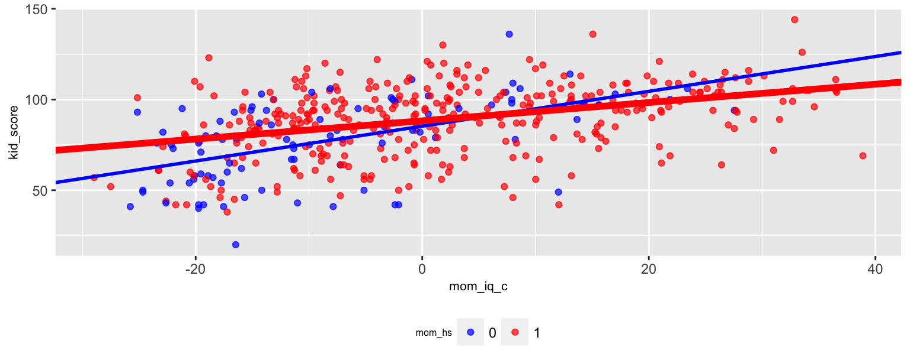
m10.4:
new <- tibble(mom_hs = 0, mom_iq = mean(kidiq$mom_iq))
pred_new <- posterior_predict(m10.4, newdata = new)
mean(pred_new)
## [1] 85.4903m10.5:
new <- tibble(mom_hs = 0, mom_iq_c = 0)
pred_new <- posterior_predict(m10.5, newdata = new)
mean(pred_new)
## [1] 85.33998Auch die Streuungen der vorhergesagten Werte unterscheiden sich nicht (wirklich): \(\sigma_{m10.4}= 18\); \(\sigma_{m10.5}= 18\).
Das Zentrieren ändert auch nicht die Regressionskoeffizienten, da die Streuungen der Prädiktoren nicht verändert wurden.
eti(m10.5)| Parameter | CI | CI_low | CI_high | Effects | Component | |
|---|---|---|---|---|---|---|
| 1 | (Intercept) | 0.95 | 80.9081223 | 89.7742632 | fixed | conditional |
| 2 | mom_hs | 0.95 | -1.9443391 | 7.4889302 | fixed | conditional |
| 4 | mom_iq_c | 0.95 | 0.6714933 | 1.2593303 | fixed | conditional |
| 3 | mom_hs:mom_iq_c | 0.95 | -0.8065738 | -0.1570037 | fixed | conditional |
Highest Density (Posterior) Intervalle (HDI oder HDPI) kann man sich komfortabel ausgeben lassen mit hdi(m10.5):
hdi(m10.5)| Parameter | CI | CI_low | CI_high | Effects | Component | |
|---|---|---|---|---|---|---|
| 1 | (Intercept) | 0.95 | 80.7088520 | 89.5338061 | fixed | conditional |
| 2 | mom_hs | 0.95 | -1.9046693 | 7.4952640 | fixed | conditional |
| 4 | mom_iq_c | 0.95 | 0.6759630 | 1.2629146 | fixed | conditional |
| 3 | mom_hs:mom_iq_c | 0.95 | -0.7889176 | -0.1478606 | fixed | conditional |
Im Falle symmetrischer Posteriori-Verteilungen (wie hier) kommen beide Arten von Intervallen zu gleichen Ergebnissen.
Das Model zeigt keine Belege, dass sich die mittlere Intelligenz von Kindern bei Müttern mit bzw. ohne Schlusabluss unterscheidet (95%PI: [-2.0, 7.8]). Hingegen fand sich ein Effekt der mütterlichen Intelligenz; pro Punkt Unterschied in müttlerlichem IQ fand sich ein Unterschied von 0.7 bis 1.3 IQ-Punkte (95%PI). Außerdem fand sich ein Beleg, dass der Zusammenhang des IQ zwischen Mutter und Kind durch den Schulabschluss moderiert wird: Bei Mütter mit Schulabschluss war der Zusammenhang zwischen Mutter-IQ und Kind-IQ geringer (95%PI: [-0.80, -0.17]).
Das Modell macht keine kausalen Aussagen. Es werden lediglich Unterschiede bzw. Zusammenhänge beschrieben.

Betrachten wir m10.3 noch einmal.
Welcher Prädiktor, mom_hs oder mom_hs ist wichtiger, im Sinne von stärker mit AV kid_score verbunden?
| Parameter | CI | CI_low | CI_high | Effects | Component |
|---|---|---|---|---|---|
| (Intercept) | 0.95 | 13.6361543 | 36.6226168 | fixed | conditional |
| mom_hs | 0.95 | 1.6133390 | 10.3110829 | fixed | conditional |
| mom_iq | 0.95 | 0.4477515 | 0.6842022 | fixed | conditional |
Das Problem ist, dass die Prädiktoren auf verschiedenen Skalen gemessen wurden, so dass sie nicht direkt vergleichbar sind. Man könnte
Hintergrund:
Nach Ihrem Studium haben Sie bei einem aufstrebenden Online-Händler angeheuert Sie sind für alles zuständig, was nach Wissenschaft oder Analyse aussieht oder sonst den Anschein erweckt, kompliziert zu sein. Aus irgendwelchen Gründen liebt Ihre Chefin Diamanten, so dass Ihre erste Aufgabe darin besteht, Diamantenpreise zu analysieren. Das Ziel Ihrer Chefin liegt darin, zu erkennen, was ein Preis ist, für den ein Diamant gut verkauft werden kann. Kennt man diesen Preis, kann man sich auf die Suche machen, ob man den Diamant irgendwo günstiger findet. Wenn ja, macht man Gewinn. Gutes Geschäftsmodell, meint Ihre Chefin.
Unterscheiden sich mittlere Diamantenpreise in Abhängigkeit von ihrer Schliffart? (Datensatz
diamonds)
Formal: \(\mu_1 = \mu_2 = \ldots = \mu_k\) mit \(k\) verschiedenen Gruppen von Schliffart.
Hypothesen, die keinen (Null) Unterschied zwischen Gruppen oder keinen Zusammenhang zwischen Variablen postulieren, kann man als Nullhypothesen bezeichnen.
Moment. Dass sich alle Mittelwerte um 0,00000000 unterscheiden, ist wohl nicht zu vermuten. Wer glaubt sowas? 🤔 Daher ist die bessere Forschungsfrage:
Wie sehr unterscheiden sich mittlere Diamantenpreise in Abhängigkeit von ihrer Schliffart?
Oder wir prüfen die Hypothese, ob die Mittelwerte “praktisch” gleich sind, also sich “kaum” unterscheiden. Der Grenzwert für “praktisch gleich” bzw. “kaum unterschiedlich” ist subjektiv.
diamondsDatenquelle, Beschreibung des Datensatzes
diamonds_url <- "https://tinyurl.com/up84jp5c"set.seed(42) # Zufallszahlen für `sample()` festlegen
diamonds <-
read_csv(diamonds_url) %>%
sample_n(1000) %>% # um etwas Rechenzeit zu sparen
select(-1) # 1. Spalte nur laufende Nummerdiamonds %>%
select(price, cut) %>%
group_by(cut) %>%
# nehmen wir die robusten Statistiken, da Preis sehr schief ist:
describe_distribution(range = FALSE, iqr = FALSE)| Variable | Mean | SD | Skewness | Kurtosis | n | n_Missing | .group |
|---|---|---|---|---|---|---|---|
| price | 4558.424 | 2978.245 | 1.647624 | 2.885673 | 33 | 0 | cut=Fair |
| price | 4000.304 | 3865.095 | 1.905924 | 3.518412 | 102 | 0 | cut=Good |
| price | 3275.998 | 3515.271 | 1.848450 | 3.060260 | 407 | 0 | cut=Ideal |
| price | 4919.661 | 4416.872 | 1.279811 | 1.038247 | 230 | 0 | cut=Premium |
| price | 3765.803 | 3679.062 | 1.788728 | 3.420209 | 228 | 0 | cut=Very Good |
… aufgeteilt in die Stufen von cut:
| Variable | Mean | SD | IQR | Range | Skewness | Kurtosis | n | n_Missing |
|---|---|---|---|---|---|---|---|---|
| price | 4558.42 | 2978.25 | 2498.50 | (743.00, 13853.00) | 1.65 | 2.89 | 33 | 0 |
| Variable | Mean | SD | IQR | Range | Skewness | Kurtosis | n | n_Missing |
|---|---|---|---|---|---|---|---|---|
| price | 4000.30 | 3865.10 | 3805 | (461.00, 18077.00) | 1.91 | 3.52 | 102 | 0 |
| Variable | Mean | SD | IQR | Range | Skewness | Kurtosis | n | n_Missing |
|---|---|---|---|---|---|---|---|---|
| price | 3276.00 | 3515.27 | 3865 | (397.00, 18168.00) | 1.85 | 3.06 | 407 | 0 |
| Variable | Mean | SD | IQR | Range | Skewness | Kurtosis | n | n_Missing |
|---|---|---|---|---|---|---|---|---|
| price | 4919.66 | 4416.87 | 5310.25 | (345.00, 18493.00) | 1.28 | 1.04 | 230 | 0 |
| Variable | Mean | SD | IQR | Range | Skewness | Kurtosis | n | n_Missing |
|---|---|---|---|---|---|---|---|---|
| price | 3765.80 | 3679.06 | 3933.50 | (373.00, 18371.00) | 1.79 | 3.42 | 228 | 0 |
Was fällt Ihnen auf?
| cut | price_md | price_iqr |
|---|---|---|
| Fair | 3,640 | 1,976 |
| Good | 3,090 | 3,745 |
| Ideal | 1,759 | 3,850 |
| Premium | 4,058 | 5,295 |
| Very Good | 2,760 | 3,902 |
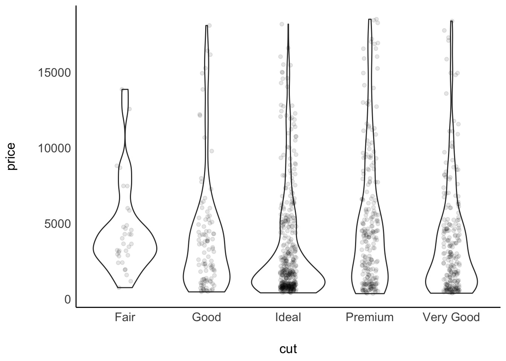
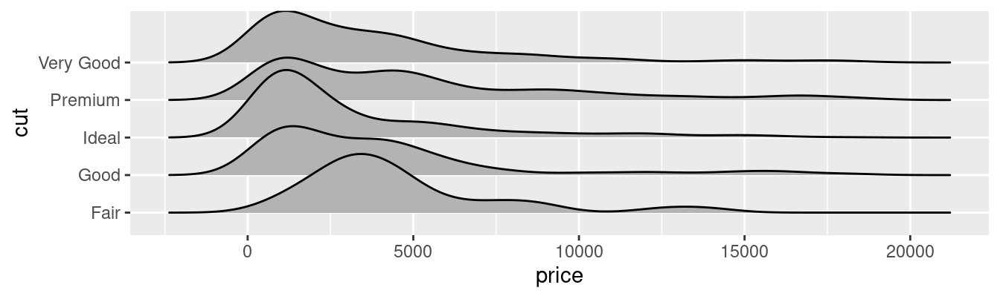
options(mc.cores = parallel::detectCores()) # Turbo einschalten
m10.6 <- stan_glm(price ~ cut, data = diamonds, refresh = 0)
# refresh=0 unterdrückt Ausgabe der Posteriori-Stichprobenm10.6 %>%
parameters()| Parameter | Median | 95% CI | pd | % in ROPE | Rhat | ESS | Prior |
|---|---|---|---|---|---|---|---|
| (Intercept) | 4567.13 | (3277.52, 5890.90) | 100% | 0% | 1.001 | 892.00 | Normal (3881.91 +- 9611.59) |
| cutGood | -571.66 | (-2058.32, 894.51) | 78.77% | 31.50% | 1.001 | 1005.00 | Normal (0.00 +- 31742.41) |
| cutIdeal | -1284.23 | (-2638.86, 47.49) | 96.88% | 6.61% | 1.001 | 944.00 | Normal (0.00 +- 19554.81) |
| cutPremium | 355.37 | (-1034.78, 1768.56) | 69.62% | 38.82% | 1.000 | 981.00 | Normal (0.00 +- 22828.05) |
| cutVery Good | -795.68 | (-2187.18, 582.42) | 88.38% | 23.71% | 1.000 | 954.00 | Normal (0.00 +- 22898.24) |
m10.6cut hat fünf verschiedene Werte (Stufen, Faktorstufen, Ausprägungen), aber es werden nur vier angezeigt.Fair, nicht ausgegeben) ist die Vergleichs- oder Referenzkategorie (baseline) und ist im Achsenabschnitt ausgedrückt.cut geben jeweils den Unterschied zur Vergleichskategorie wieder.Fair haben laut Modell einen mittleren Preis von ca. 4300$.Good sind laut Modell im Mittel gut 400$ billiger als Diamanten der Schliffart Fair, etc.plot(hdi(m10.6))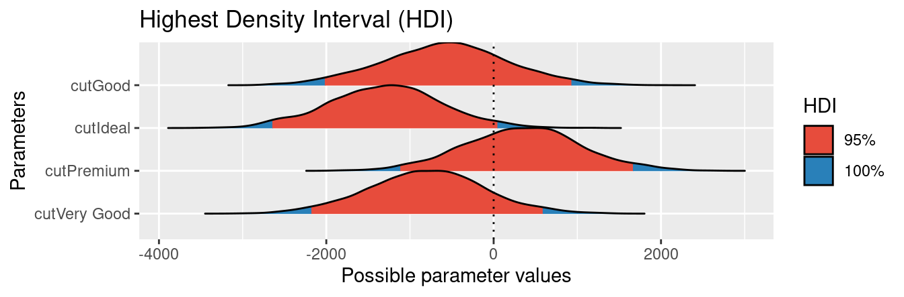
m10.6 %>%
hdi()| Parameter | CI | CI_low | CI_high | Effects | Component |
|---|---|---|---|---|---|
| (Intercept) | 0.95 | 3280.548 | 5894.67535 | fixed | conditional |
| cutGood | 0.95 | -2023.230 | 925.10133 | fixed | conditional |
| cutIdeal | 0.95 | -2642.159 | 43.83626 | fixed | conditional |
| cutPremium | 0.95 | -1119.735 | 1666.91606 | fixed | conditional |
| cutVery Good | 0.95 | -2180.495 | 584.94852 | fixed | conditional |
… zwischen den Preis-Mittelwerten in der Population?
Teilweise, denn einige Schätzintervalle (für die Preisunterschiede) waren im Modell m10.6 weit von der Null entfernt, andere nicht.
Auf Basis unseres Modells schließen wir also (mit hoher Sicherheit) aus, dass alle Preise im Mittelwert exakt identisch sind.
Ehrlicherweise hätte sowieso niemand geglaubt, dass die exakte Nullhypothese \(\mu_1 = \mu_2 = \ldots = \mu_k\) bis in die letzte Dezimale gilt. Anders gesagt: Die Wahrscheinlichkeit eines bestimmten Wertes einer stetigen Zufallsvariable ist praktisch Null.
Aber: Viele Forscheris prüfen gerne die Nullhypothese, daher taucht der Begriff hier auf.
Das Verfahren der Frequentistischen Statistik, um die Nullhypothese \(\mu_1 = \mu_2 = \ldots = \mu_k\) zu testen, nennt man Varianzanalyse (analysis of variance, kurz ANOVA).
In der Bayes-Statistik nutzt man - wie immer - primär die Post-Verteilung, um Fragen der Inferenz (z.B. Gruppenunterschiede dieser Art) zu inferenzstatistisch zu beurteilen.
m10.6Die Regressionsoeffizienten pro Stufen von cutentsprechen den Mittelwerten \(\hat{y_i}\) aus der Posteriori-Verteilung. Mit coef(m10.6) kann man sie sich bequem ausgeben lassen.
coef(m10.6)
## (Intercept) cutGood cutIdeal cutPremium cutVery Good
## 4567.1295 -571.6561 -1284.2294 355.3705 -795.6830Unser Modell m10.6 hat schwach informierte (weakly informative) Priors. Für Achsenabschnitt und die Regressionskoeffizienten werden Normalverteilungen angenommen mit Mittelwert entsprechend den Stichprobendaten und Streuung, die der 2.5-fachen der Streuung in der Stichprobe entspricht. Mehr Infos kann man sich so ausgeben lassen: prior_summary(m10.6). Wo man man über mehr inhaltliches Wissen verfügt, so wird man die Priors anpassen wollen, z.B.:
m10.6b <- stan_glm(price ~ cut, data = diamonds, refresh = 0,
prior = normal(location = c(100, 100, 100, 100),
scale = c(100, 100, 100, 100)),
prior_intercept = normal(3000, 500))
coef(m10.6b)
## (Intercept) cutGood cutIdeal cutPremium cutVery Good
## 3768.58149 101.89933 -40.05679 237.43736 81.01187Die Streuung des Modells, \(\sigma\), kann man sich mit sigma(modell) ausgeben lassen:
sigma(m10.6b)
## [1] 3830.44Implizit bekommt man diese Informationen mitgeteilt durch die Größe der Konfidenzintervalle.
cut ist eine nominale Variable, da passt in R der Typ factor (Faktor) am besten. Aktuell ist der Typ noch character (Text):diamonds <- diamonds %>%
mutate(cut = factor(cut))levels(diamonds$cut)
## [1] "Fair" "Good" "Ideal" "Premium" "Very Good"Setzen wir Ideal als Referenzkategorie und lassen die restliche Reihenfolge, wie sie ist:
library(forcats)
diamonds <- diamonds %>%
mutate(cut = factor(cut),
cut = fct_relevel(cut, "Ideal"))levels(diamonds$cut)
## [1] "Ideal" "Fair" "Good" "Premium" "Very Good"m10.6a <- stan_glm(price ~ cut, data = diamonds, refresh = 0)
hdi(m10.6a)| Parameter | CI | CI_low | CI_high | Effects | Component |
|---|---|---|---|---|---|
| (Intercept) | 0.95 | 2925.77152 | 3651.988 | fixed | conditional |
| cutFair | 0.95 | -57.51493 | 2583.564 | fixed | conditional |
| cutGood | 0.95 | -193.40682 | 1523.917 | fixed | conditional |
| cutPremium | 0.95 | 1046.17827 | 2226.698 | fixed | conditional |
| cutVery Good | 0.95 | -125.43593 | 1087.389 | fixed | conditional |
bayes_r2() kann man sich die Verteilung berechnen lassen.r2(m10.6)
## # Bayesian R2 with Compatibility Interval
##
## Conditional R2: 0.031 (95% CI [0.012, 0.052])Möchte man es ausführlicher, und im Komfort einer Bayes-Analyse schwelgen, so kann man sich die Posteriori-Verteilung von \(R2\) ausgeben lassen:
m10.6_r2 <-
m10.6 %>%
r2_posterior() %>%
as_tibble()
hdi(m10.6_r2) %>%
plot()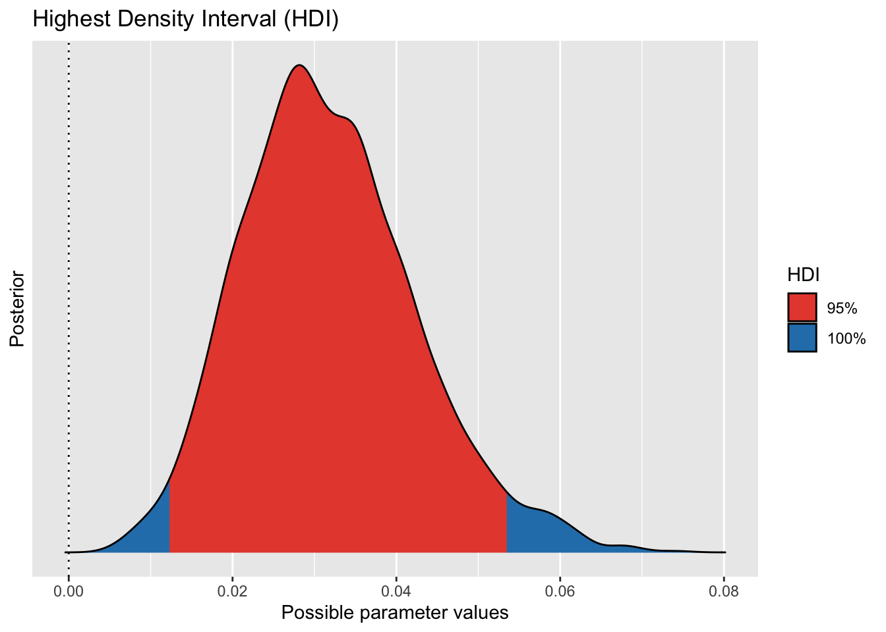
Gelman u. a. (2019), Gelman, Hill, und Vehtari (2021), Kap. 11.7
Entscheidungsregel:
Kruschke (2018)

Kruschke (2018), Abbildung 1, S. 272
rope(m10.6)| Parameter | CI | ROPE_low | ROPE_high | ROPE_Percentage | Effects | Component |
|---|---|---|---|---|---|---|
| (Intercept) | 0.95 | -384.4637 | 384.4637 | 0.0000000 | fixed | conditional |
| cutGood | 0.95 | -384.4637 | 384.4637 | 0.3150000 | fixed | conditional |
| cutIdeal | 0.95 | -384.4637 | 384.4637 | 0.0660526 | fixed | conditional |
| cutPremium | 0.95 | -384.4637 | 384.4637 | 0.3881579 | fixed | conditional |
| cutVery Good | 0.95 | -384.4637 | 384.4637 | 0.2371053 | fixed | conditional |
Alle Faktorstufen von cut haben doch einen beträchtlichen Teil ihrer Wahrscheinlichkeitsmasse der Posteriori-Verteilung im ROPE.
Wir können daher für keinen der Unterschiede das ROPE verwerfen.
Das hört sich abstrakt an? Dann lassen Sie uns das lieber visualisieren.
Die angegebenen Prozentwerte beziehen sich nicht auf die 100% der Post-Verteilung, sondern (in der Voreinstellung) auf das 95%-ETI, s. help(rope).
m10.6 liegt nicht innerhalb des Rope.rope(m10.6) %>% plot()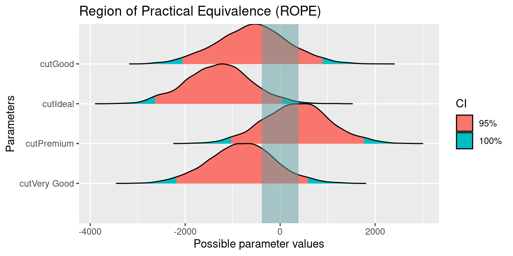
Das ROPE druchkreuzt die “Berge” der Posteriori-Verteilung doch recht deutlich. Wir knönen das Rope nicht verwerfen.
library(bayestestR)
rope(m10.6, range = c(-100, 100))Im Standard werden 95%-HDI berichtet, das kann man so ändern, wenn man möchte:
rope(m10.6, range, c(-100,100), ci = .89, ci_method = "ETI")ETI (equal tails interval) steht für ein PI.
plot(rope(m10.6, range = c(-100, 100)))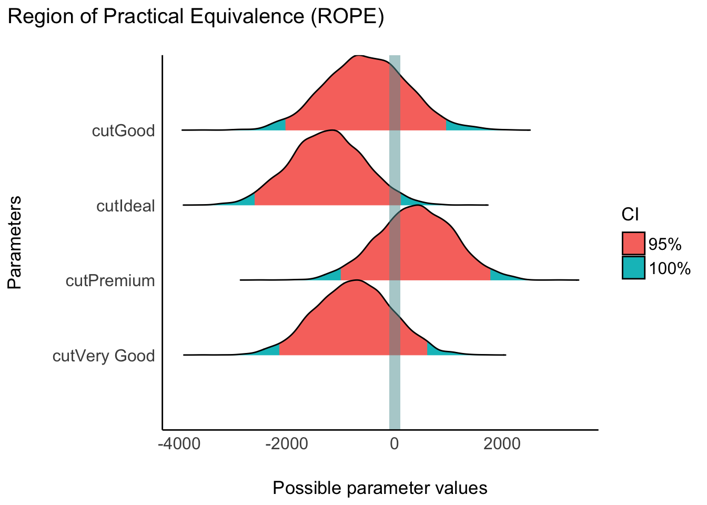
Nur das 95%-HDI für Schliffart “Ideal” schloss den Indifferenzbereich von ±100€ aus, die übrigen Mittelwertsdifferenzen nicht. Für die übrigen Differenzen ist keine klare inferenzstatistische Aussage hinsichtlich eines Indifferenzbereichs möglich: Es ist plauibel, laut dem Modell, dass es einen praktisch bedeutsamen Unterschied gibt, aber es ist auch plausibel, dass es keinen praktisch bedeutsamen Unterschied gibt.
Die 95%HDI für die Mittelwertsdifferenzen waren wie folgt: cutGood: [-2040, 953], cutIdeal: [-2645, -4], cutPremium: [-965, 1732], cutVeryGood: [-2102, 627]. Das Modell erklärte im Median ca. 3% der Varianz, also nur einen kleinen Teil.
Stehen sowohl der IQ der Mutter als auch, unabhängig davon, das Alter der Mutter im Zusammenhang mit dem IQ des Kindes?
Datenquelle als CSV-Datei oder alternativ:
library(rstanarm)
data("kidiq")kidiq %>%
correlation()| Parameter1 | Parameter2 | r | CI | CI_low | CI_high | t | df_error | p | Method | n_Obs |
|---|---|---|---|---|---|---|---|---|---|---|
| kid_score | mom_hs | 0.2369164 | 0.95 | 0.1460447 | 0.3238236 | 5.068516 | 432 | 0.0000024 | Pearson correlation | 434 |
| kid_score | mom_iq | 0.4482758 | 0.95 | 0.3697490 | 0.5204440 | 10.423188 | 432 | 0.0000000 | Pearson correlation | 434 |
| kid_score | mom_age | 0.0919982 | 0.95 | -0.0021491 | 0.1845289 | 1.920290 | 432 | 0.1109587 | Pearson correlation | 434 |
| mom_hs | mom_iq | 0.2827094 | 0.95 | 0.1937362 | 0.3670699 | 6.125906 | 432 | 0.0000000 | Pearson correlation | 434 |
| mom_hs | mom_age | 0.2145284 | 0.95 | 0.1228811 | 0.3025476 | 4.565176 | 432 | 0.0000195 | Pearson correlation | 434 |
| mom_iq | mom_age | 0.0916084 | 0.95 | -0.0025422 | 0.1841491 | 1.912085 | 432 | 0.1109587 | Pearson correlation | 434 |
Oder als Korrelationsmatrix:
kidiq %>%
correlation() %>%
summary()| Parameter | mom_age | mom_iq | mom_hs |
|---|---|---|---|
| kid_score | 0.0919982 | 0.4482758 | 0.2369164 |
| mom_hs | 0.2145284 | 0.2827094 | NA |
| mom_iq | 0.0916084 | NA | NA |
kidiq %>%
correlation() %>%
summary() %>%
plot()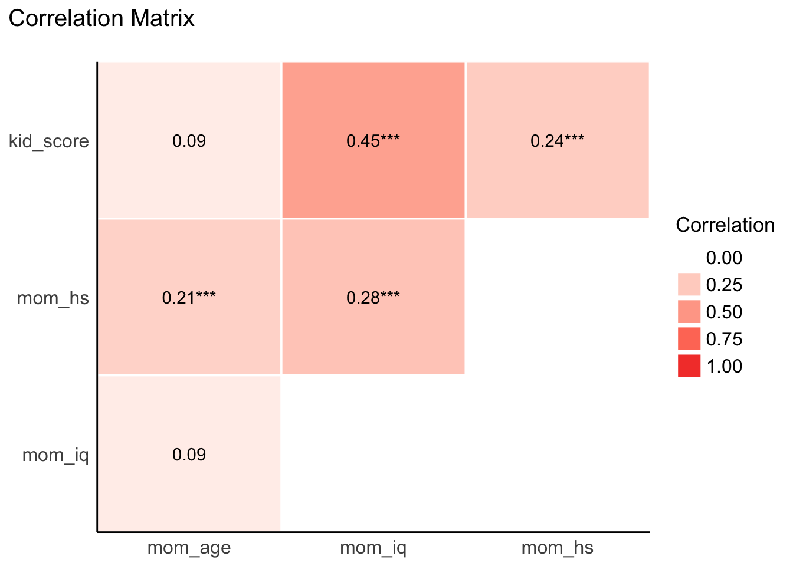
m10.7 <- stan_glm(kid_score ~ mom_iq, data = kidiq, refresh = 0)
m10.8 <- stan_glm(kid_score ~ mom_age, data = kidiq, refresh = 0)coef(m10.7)
## (Intercept) mom_iq
## 25.840357 0.610583coef(m10.8)
## (Intercept) mom_age
## 70.8061260 0.7012694m10.7
Steigung: 0.6
kidiq %>%
ggplot(aes(x = mom_iq, y = kid_score)) +
geom_point() +
geom_abline(intercept = coef(m10.7)[1],
slope = coef(m10.7)[2],
color = "blue")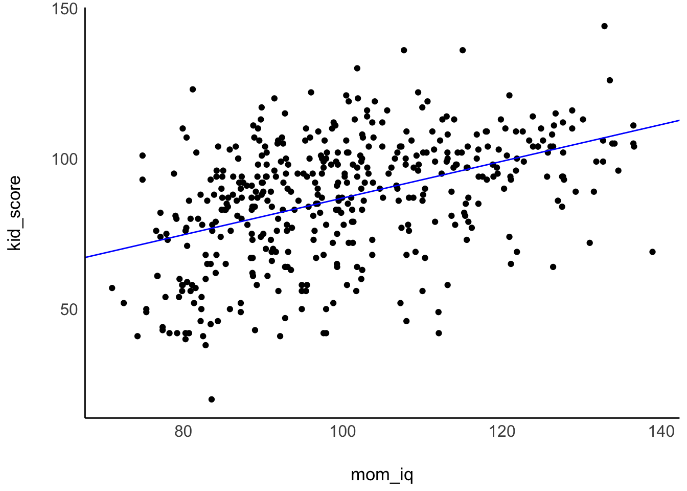
m10.8
Steigung: 0.7
kidiq %>%
ggplot(aes(x = mom_age, y = kid_score)) +
geom_point() +
geom_abline(intercept = coef(m10.8)[1],
slope = coef(m10.8)[2],
color = "blue")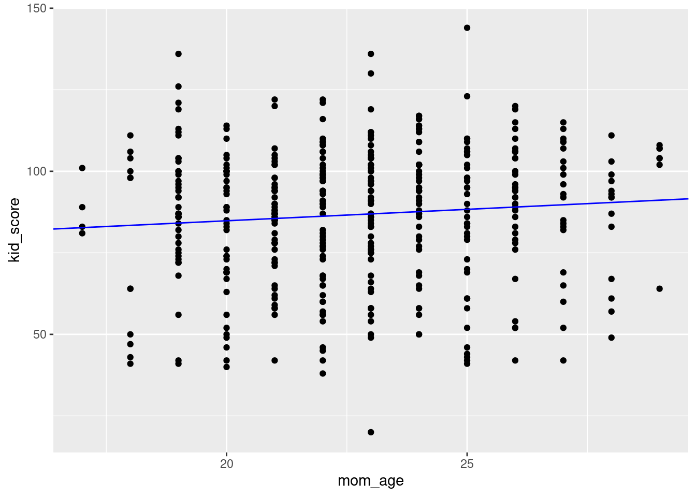
m10.9 <- stan_glm(kid_score ~ mom_iq + mom_age,
data = kidiq,
refresh = 0)
coef(m10.9)
## (Intercept) mom_iq mom_age
## 17.6886001 0.6031288 0.3932556Die Regressionsgewichte unterscheiden sich zu den von den jeweiligen univariaten Regressionen.
coef(m10.9)
## (Intercept) mom_iq mom_age
## 17.6886001 0.6031288 0.3932556Auf der Achse von mom_iq erkennt man deutlich (anhand der Farbänderung) die Veränderung für die AV (kid_score). Auf der Achse für mom_age sieht man, dass sich die AV kaum ändert, wenn sich mom_age ändert.
ggplot(data.frame(x=NA, y=NA)) +
theme(panel.background = element_rect(fill = 'lightblue'))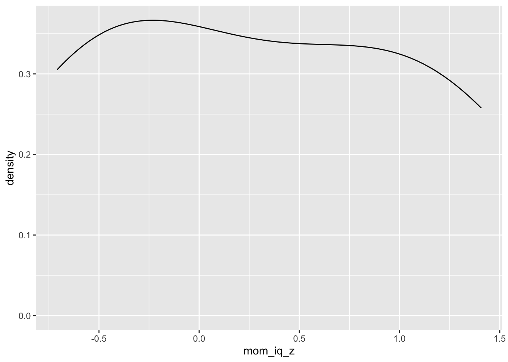
Leider macht mein Hirn hier nicht mit. Unsere Schwächen, eine große Zahl an Dimensionen zu visualisieren, ist der Grund, warum wir mathematische Modelle brauchen.
Daher kann man ein Modell verstehen als eine einfache Zusammenfassung eines (ggf. hochdimensionalen) Variablenraumes.
Welcher Prädiktor ist nun “wichtiger” oder “stärker” in Bezug auf den Zusammenhang mit der AV, mom_iq oder mom_age?
mom_iq hat den größeren Koeffizienten.
mom_age hat weniger Streuung.
Um die Relevanz der Prädiktoren vergleichen zu können, müsste man vielleicht die Veränderung von kid_score betrachten, wenn man von kleinsten zum größten Prädiktorwert geht.
Allerdings sind Extremwerte meist instabil (da sie von einer einzigen Beobachtung bestimmt werden).
Sinnvoller ist es daher, die Veränderung in der AV zu betrachten, wenn man den Prädiktor von “unterdurchschittlich” auf “überdurchschnittlich” ändert.
Das kann man mit z-Standardisierung erreichen.
\[z = \frac{x - \bar{x}}{sd(x)}\]
data("kidiq")
kidiq2 <-
kidiq %>%
mutate(mom_iq_z = ((mom_iq - mean(mom_iq)) / sd(mom_iq))) %>%
select(mom_iq, mom_iq_z) %>%
head()| variable | n | mean | sd |
|---|---|---|---|
| kid_score | 434 | 86.797 | 20.411 |
| mom_age | 434 | 22.786 | 2.701 |
| mom_hs | 434 | 0.786 | 0.411 |
| mom_iq | 434 | 100.000 | 15.000 |
So kann man auch die z-Transformation (“Skalierung”) durchführen:
kidiq <-
standardize(kidiq, append = TRUE)
head(kidiq)| kid_score | mom_hs | mom_iq | mom_age | kid_score_z | mom_hs_z | mom_iq_z | mom_age_z |
|---|---|---|---|---|---|---|---|
| 65 | 1 | 121.11753 | 27 | -1.0679324 | 0.521631 | 1.4078352 | 1.5602285 |
| 98 | 1 | 89.36188 | 25 | 0.5488676 | 0.521631 | -0.7092079 | 0.8197811 |
| 85 | 1 | 115.44316 | 27 | -0.0880536 | 0.521631 | 1.0295443 | 1.5602285 |
| 83 | 1 | 99.44964 | 25 | -0.1860415 | 0.521631 | -0.0366907 | 0.8197811 |
| 115 | 1 | 92.74571 | 27 | 1.3817645 | 0.521631 | -0.4836193 | 1.5602285 |
| 98 | 0 | 107.90184 | 18 | 0.5488676 | -1.912647 | 0.5267892 | -1.7717849 |
Der Schalter append = TRUE sorgt dafür, dass die ursprünglichen Variablen beim Z-Standardisieren nicht überschrieben werden, sondern angehängt werden (mit einem Suffix _z).
Man kann auch nur einzelne Variablen standardisieren
kidiq %>%
standardize(select = c("mom_iq", "mom_age", "kid_score"))Man kann das Standardisieren auch von Hand machen, ohne ein Extra-Paket:
#data(kidiq)
kidiq %>%
mutate(mom_iq_z2 = scale(mom_iq),
mom_age_z2 = scale(mom_age),
kid_score_z2 = scale(kid_score)) %>%
head()| kid_score | mom_hs | mom_iq | mom_age | kid_score_z | mom_hs_z | mom_iq_z | mom_age_z | mom_iq_z2 | mom_age_z2 | kid_score_z2 |
|---|---|---|---|---|---|---|---|---|---|---|
| 65 | 1 | 121.11753 | 27 | -1.0679324 | 0.521631 | 1.4078352 | 1.5602285 | 1.4078352 | 1.5602285 | -1.06793237 |
| 98 | 1 | 89.36188 | 25 | 0.5488676 | 0.521631 | -0.7092079 | 0.8197811 | -0.7092079 | 0.8197811 | 0.54886757 |
| 85 | 1 | 115.44316 | 27 | -0.0880536 | 0.521631 | 1.0295443 | 1.5602285 | 1.0295443 | 1.5602285 | -0.08805362 |
| 83 | 1 | 99.44964 | 25 | -0.1860415 | 0.521631 | -0.0366907 | 0.8197811 | -0.0366907 | 0.8197811 | -0.18604150 |
| 115 | 1 | 92.74571 | 27 | 1.3817645 | 0.521631 | -0.4836193 | 1.5602285 | -0.4836193 | 1.5602285 | 1.38176451 |
| 98 | 0 | 107.90184 | 18 | 0.5488676 | -1.912647 | 0.5267892 | -1.7717849 | 0.5267892 | -1.7717849 | 0.54886757 |
m10.10Das Standardisieren der AV, kid_score ist nicht nötig, um den Effekt der Prädiktoren (UV) auf die AV zu untersuchen. Standardisiert man die AV, so liefern die Regressionskoeffizienten (Betas) Aussage darüber, um wie viele SD-Einheiten sich die AV verändert, wenn sich ein Prädiktor um eine SD-Einheit verändert.
m10.10 <- stan_glm(kid_score_z ~ mom_iq_z + mom_age_z, data = kidiq, refresh = 0)
coef(m10.10)
## (Intercept) mom_iq_z mom_age_z
## 0.0004107225 0.4430261801 0.0516987335kid_score) an, da kid_score_z = 0 identisch ist zum Mittelwert von kid_score.mom_iq_z gibt an, um wie viele SD-Einheiten sich kid_score (die AV) ändert, wenn sich mom_iq um eine SD-Einheit ändert.mom_age_z gibt an, um wie viele SD-Einheiten sich kid_score (die AV) ändert, wenn sich mom_age um eine SD-Einheit ändert.Jetzt sind die Prädiktoren in ihrer Relevanz (Zusammenhang mit der AV) vergleichbar:
parameters(m10.10) | Parameter | Median | 95% CI | pd | % in ROPE | Rhat | ESS | Prior |
|---|---|---|---|---|---|---|---|
| (Intercept) | 4.11e-04 | (-0.08, 0.08) | 50.40% | 100% | 1.000 | 4998.00 | Normal (-2.81e-16 +- 2.50) |
| mom_iq_z | 0.44 | (0.36, 0.53) | 100% | 0% | 1.000 | 5035.00 | Normal (0.00 +- 2.50) |
| mom_age_z | 0.05 | (-0.03, 0.14) | 88.55% | 89.05% | 1.001 | 5165.00 | Normal (0.00 +- 2.50) |
plot(hdi(m10.10))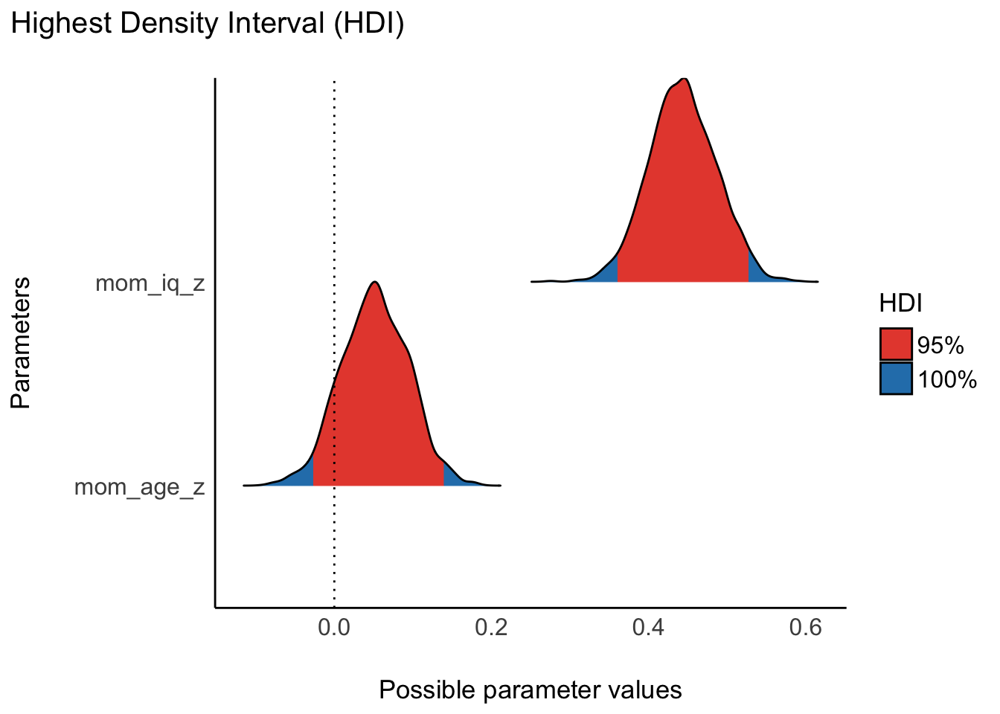
Kruschke (2018) schlägt vor, einen Regressionskoeffizienten unter folgenden Umständen als “praktisch Null” zu bezeichnen:
\[b = r \frac{sd_x}{sd_y}\]
m10.11 <-
stan_glm(kid_score_z ~ mom_iq_z , data = kidiq, refresh = 0)
coef(m10.11)
## (Intercept) mom_iq_z
## -0.000102025 0.449942456kidiq %>%
select(kid_score, mom_iq, kid_score_z, mom_iq_z) %>%
correlation()| Parameter1 | Parameter2 | r | CI | CI_low | CI_high | t | df_error | p | Method | n_Obs |
|---|---|---|---|---|---|---|---|---|---|---|
| kid_score | mom_iq | 0.4482758 | 0.95 | 0.369749 | 0.520444 | 10.42319 | 432 | 0 | Pearson correlation | 434 |
| kid_score | kid_score_z | 1.0000000 | 0.95 | 1.000000 | 1.000000 | Inf | 432 | 0 | Pearson correlation | 434 |
| kid_score | mom_iq_z | 0.4482758 | 0.95 | 0.369749 | 0.520444 | 10.42319 | 432 | 0 | Pearson correlation | 434 |
| mom_iq | kid_score_z | 0.4482758 | 0.95 | 0.369749 | 0.520444 | 10.42319 | 432 | 0 | Pearson correlation | 434 |
| mom_iq | mom_iq_z | 1.0000000 | 0.95 | 1.000000 | 1.000000 | Inf | 432 | 0 | Pearson correlation | 434 |
| kid_score_z | mom_iq_z | 0.4482758 | 0.95 | 0.369749 | 0.520444 | 10.42319 | 432 | 0 | Pearson correlation | 434 |
r2(m10.10)
## # Bayesian R2 with Compatibility Interval
##
## Conditional R2: 0.204 (95% CI [0.142, 0.268])Ist dieser Wert von \(R2\) “gut”? Diese Frage ist ähnlich zur Frage “Ist das viel Geld?”; man kann die Frage nur im Kontext beantworten.
Eine einfache Lösung ist immer, Modelle zu vergleichen. Dann kann man angeben, welches Modell die Daten am besten erklärt, z.B. auf Basis von \(R^2\).
Zu beachten ist, dass das Modell theoretisch fundiert sein sollte. Vergleicht man viele Modelle aufs Geratewohl, so muss man von zufällig hohen Werten der Modellgüte im Einzelfall ausgehen.
Wenn Sie aber unbedingt eine “objektive” Antwort auf die Frage “wie viel ist viel?” haben wollen, ziehen wir Herrn Cohen zu Rate:
interpret_r2(0.2) # aus `easystats`
## [1] "moderate"
## (Rules: cohen1988)Danke, Herr Cohen!
m10.10 und Modelldefinitionprior_summary(m10.10) # aus rstanarm
## Priors for model 'm10.10'
## ------
## Intercept (after predictors centered)
## ~ normal(location = -2.8e-16, scale = 2.5)
##
## Coefficients
## ~ normal(location = [0,0], scale = [2.5,2.5])
##
## Auxiliary (sigma)
## ~ exponential(rate = 1)
## ------
## See help('prior_summary.stanreg') for more details\[ \text{kid_score} \sim \mathcal{N}(0,2.5)\\ \mu_i = \alpha + \beta_1\text{mom_iq}_i + \beta_2\text{mom_age}_i \\ \alpha \sim \mathcal{N}(0,2.5)\\ \beta_1 \sim \mathcal{N}(0,2.5)\\ \beta_2 \sim \mathcal{N}(0,2.5)\\ \sigma \sim \mathcal{E}(1) \]
Schreibt man einen Bericht, so bietet es sich an, die Modelldefinition zumindest im Anhang aufzuführen.
Das Modell spricht sich klar für einen statistischen, linearen Effekt von Intelligenz der Mutter auf die Intelligenz des Kindes aus, wenn das Alter der Mutter statistisch kontrolliert wird (95%PI: [0.38, 0.51]). Hingegen zeigt das Modell, dass das Alter der Mutter statistisch eher keine Rolle spielt (95%PI: [-0.02, 0.12]). Alle Variablen wurden z-transformiert. Insgesamt erkärt das Modell im Median einen Anteil von ca. 0.2 an der Varianz der Kinderintelligenz. Das Modell griff auf die Standard-Priori-Werte aus dem R-Paket rstanarm (Goodrich u. a. 2022) zurück (s. Anhang für Details).
Hier wird von einem “statistischen Effekt” gesprochen, um klar zu machen, dass es sich lediglich um assoziative Zusammenhänge, und nicht um kausale Zusammenhänge, handelt. Kausale Zusammenhänge dürfen wir nur verkünden, wenn wir sie a) explizit untersuchen, b) sich in der Literatur Belege dafür finden oder c) wir ein Experiment fachgerecht durchgeführt haben.
🏎️VERTIEFUNG🏎️
Zentrale Annahme: Die AV ist eine lineare Funktion der einzelnen Prädiktoren:
\[y= \alpha + \beta_1x_1 + \beta_2 x_2 + \cdots .\]
Hingegen ist es weniger, dass die AV (y) normalverteilt ist. Zwar nimmt die Regression häufig normalverteilte Residuen an, aber diese Annahme ist nicht wichtig, wenn es nur darum geht, die Regressionskoeffizienten zu schätzen (Gelman, Hill, und Vehtari 2021).
Ist die Linearitätsannahme erfüllt, so sollte der Residualplot nur zufällige Streuung um \(y=0\) herum zeigen.
Ein Residuum \(e\) ist der Vorhersagefehler, also die Differenz zwischen vorhergesagtem und tatsächlichem Wert:
\(e_i = y_i - \hat{y}_i\)
kidiq <-
kidiq %>%
mutate(m10.10_pred = predict(m10.10), # vorhergesagten Werte
m10.10_resid = resid(m10.10)) # Residuenkidiq %>%
ggplot(aes(x = m10.10_pred, y = m10.10_resid)) +
geom_hline(color="white", yintercept = 0, size = 2) +
geom_hline(color = "grey40",
yintercept = c(-1,1),
size = 1,
linetype = "dashed") +
geom_point(alpha = .7) +
geom_smooth()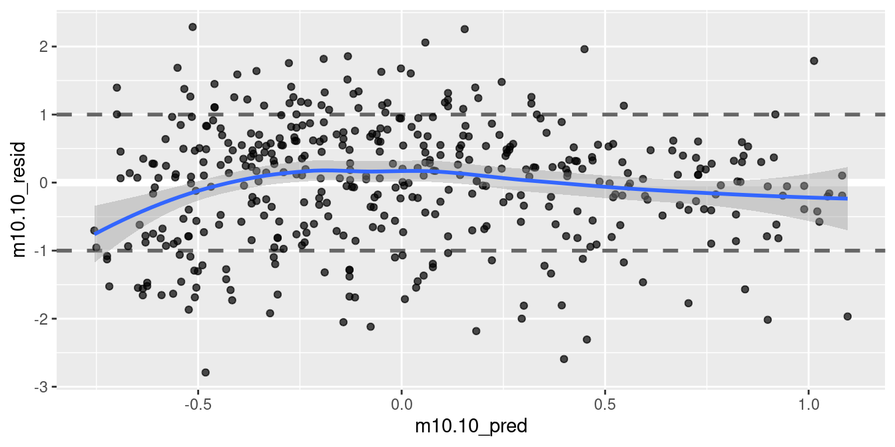
Hier erkennt man keine größeren Auffälligkeiten.
pp_check(m10.10)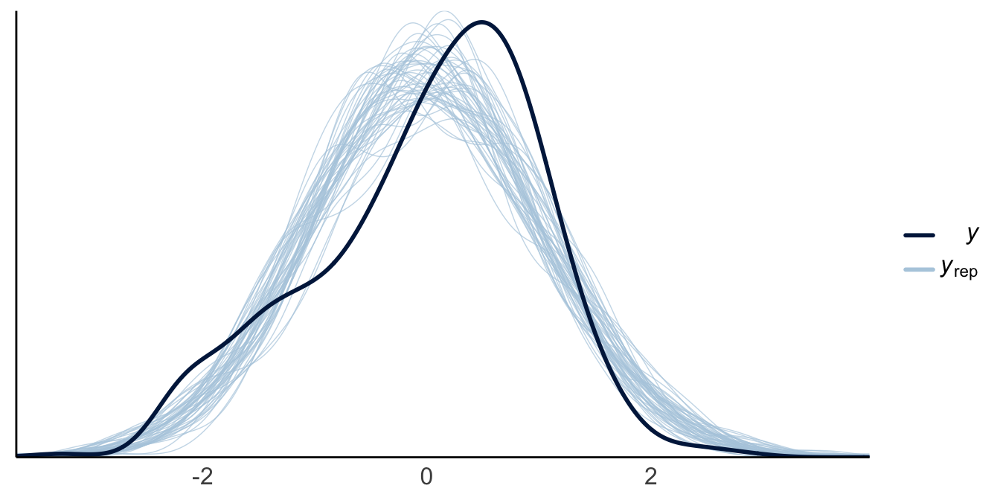
Unser Modell - bzw. die Stichproben unserer Posteriori-Verteilung, \(y_{rep}\) verfehlt den Mittelwert von \(y\) leider recht häufig.
set.seed(42)
data(kidiq)
kidiq3 <-
kidiq %>%
standardize(append = TRUE) %>%
sample_n(size = 300)
#| results: "hide"
m10.10a <- stan_glm(mom_age_z ~ mom_iq_z, data = kidiq3, refresh = 0, chains = 1)
m10.10b <- stan_glm(mom_iq_z ~ mom_age_z, data = kidiq3, refresh = 0, chains = 1)
kidiq3 <-
kidiq3 %>%
mutate(mom_age_resid = resid(m10.10a)) %>%
mutate(mom_iq_resid = resid(m10.10b))
m10.10c <- stan_glm(kid_score_z ~ mom_age_resid, data = kidiq3, refresh = 0, chains = 1)
m10.10d <- stan_glm(kid_score_z ~ mom_iq_resid, data = kidiq3, refresh = 0, chains = 1)
kidiq3 <-
kidiq3 %>%
mutate(m10.10c_resid = resid(m10.10c)) %>%
mutate(m10.10d_resid = resid(m10.10d))#(m10.10a_plot + m10.10b_plot) / (m10.10c_plot + m10.10d_plot)
plots(m10.10a_plot, m10.10b_plot, m10.10c_plot, m10.10d_plot,
n_rows = 2, tags = "A",
guides = "collect")
Die vertikalen Balken zeigen die Residuen.
kid-score_z.mom_iq_c sind kaum mit der AV assoziiert. Das heißt, nutzt man den Teil von mom_age_z, der nicht mit mom_iq_z zusammenhängt, um kid_score vorher zusagen, findet man keinen (kaum) Zusammenhang.mom_age_c sind stark mit der AV assoziiert. Das heißt, nutzt man den Teil von mom_iq_z, der nicht mit mom_age_z zusammenhängt, um kid_score vorher zusagen, findet man einen starken Zusammenhang.Eine multiple Regression liefert die gleichen Regressionskoeffizienten wie die Modelle aus Teildiagrammen (C) und (D).
| Parameter | Median | 95% CI | pd | % in ROPE | Rhat | ESS | Prior |
|---|---|---|---|---|---|---|---|
| (Intercept) | 4.11e-04 | (-0.08, 0.08) | 50.40% | 100% | 1.000 | 4998.00 | Normal (-2.81e-16 +- 2.50) |
| mom_iq_z | 0.44 | (0.36, 0.53) | 100% | 0% | 1.000 | 5035.00 | Normal (0.00 +- 2.50) |
| mom_age_z | 0.05 | (-0.03, 0.14) | 88.55% | 89.05% | 1.001 | 5165.00 | Normal (0.00 +- 2.50) |
mtcars2 <-
mtcars %>%
standardize()
m12a <- stan_glm(disp ~ wt, data = mtcars2, refresh = 0, chains = 1)
m12b <- stan_glm(wt ~ disp, data = mtcars2, refresh = 0, chains = 1)
mtcars2 <-
mtcars %>%
mutate(m12a_resid = resid(m12a)) %>%
mutate(m12b_resid = resid(m12b))
m12c <- stan_glm(mpg ~ m12a_resid, data = mtcars2, refresh = 0, chains = 1)
m12d <- stan_glm(mpg ~ m12b_resid, data = mtcars2, refresh = 0, chains = 1)
mtcars2 <-
mtcars2 %>%
mutate(m12c_resid = resid(m12c)) %>%
mutate(m12d_resid = resid(m12d))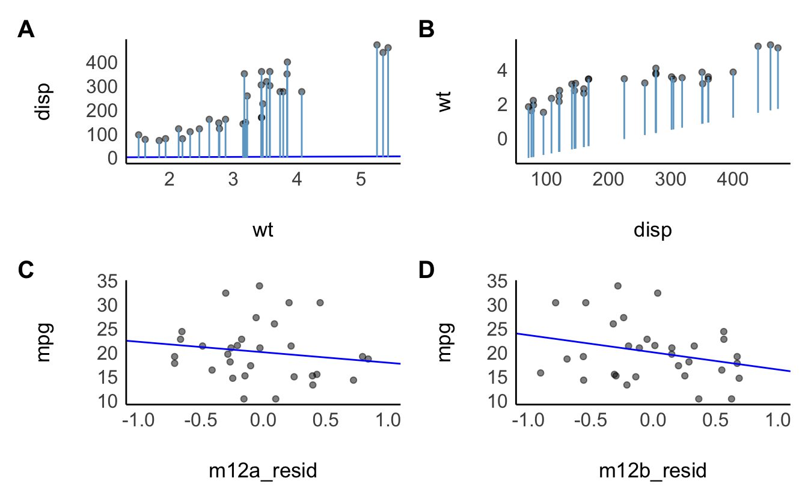
Übrigens liefern stan_glm() und lm oft ähnliche Parameterwerte (bei schwach informativen Prioriwerten):
stan_glm(mpg ~ hp + cyl, data = mtcars, refresh = 0) %>% coef()
## (Intercept) hp cyl
## 36.84877038 -0.01934222 -2.26124451lm(mpg ~ hp + cyl, data = mtcars) %>% coef()
## (Intercept) hp cyl
## 36.9083305 -0.0191217 -2.2646936Wenn auch die Parameterwerte eines Frequentistischen und Bayes-Modell numerisch ähnlich sein können, so ist doch die Interpretation grundverschieden. Bayesmodelle erlauben Wahrscheinlichkeitsaussagen zu den Parametern, Frequentistische Modelle nicht.
Eine Kurzdarstellung des Bayes-Inferenz findet sich in diesem Post und in diesem.
Forschungsfrage: Kann man anhand des Spritverbrauchs vorhersagen, ob ein Auto eine Automatik- bzw. ein manuelle Schaltung hat? Anders gesagt: Hängen Spritverbrauch und Getriebeart? (Datensatz
mtcars)
data(mtcars)
mtcars2 <-
mtcars %>%
standardize(append = TRUE)m13 <-
stan_glm(am ~ mpg_z,
data = mtcars2,
refresh = 0)
coef(m13)
## (Intercept) mpg_z
## 0.4060587 0.2975638Ab mpg_z = 0.41, 0.3 sagt das Modell am=1 (manuell) vorher. Ganz ok.
mtcars2 %>%
ggplot(aes(x = mpg_z, y = am)) +
geom_hline(yintercept = 0.5, color = "white", size = 2) +
geom_point() +
geom_abline(intercept = coef(m13)[1],
slope = coef(m13)[2],
color = "blue") 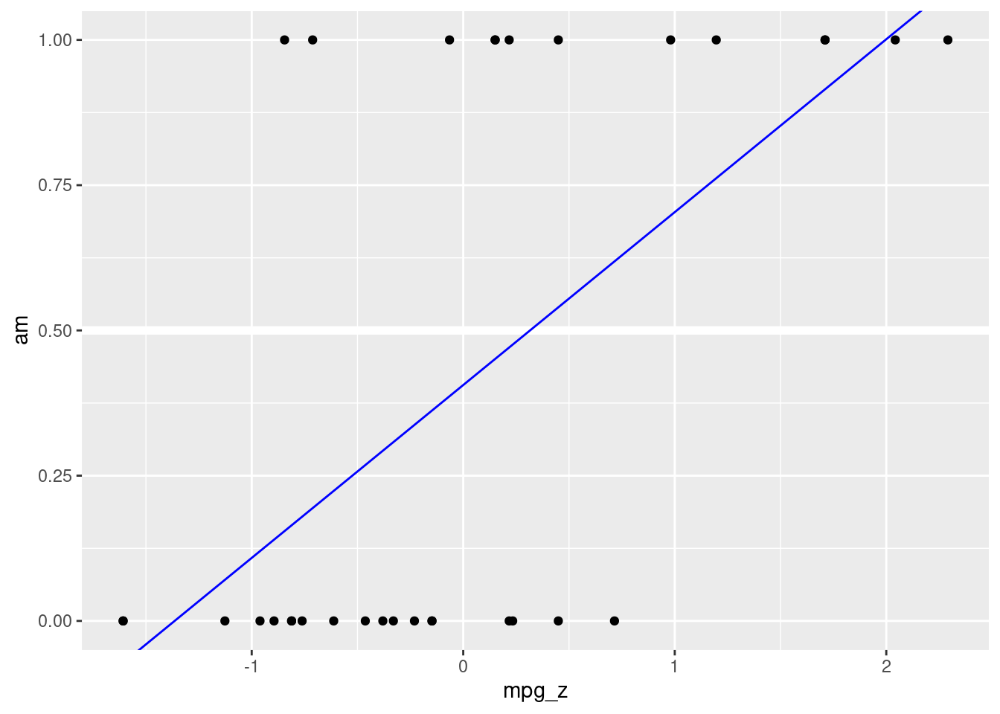
neg_am <- predict(m13, newdata = tibble(mpg_z = -1.3))Für kleine Werte von mpg_z (<1.3) sagt unser Modell negative Werte für am voraus. Das macht keinen Sinn. Müssen wir mal bei Gelegenheit besser machen.

Genug für heute 👍
Mittlerweile gibt es Ansätze für einem Verfahren ähnlich dem ROPE-Ansatz, der weiter unten vorgestellt wird.↩︎